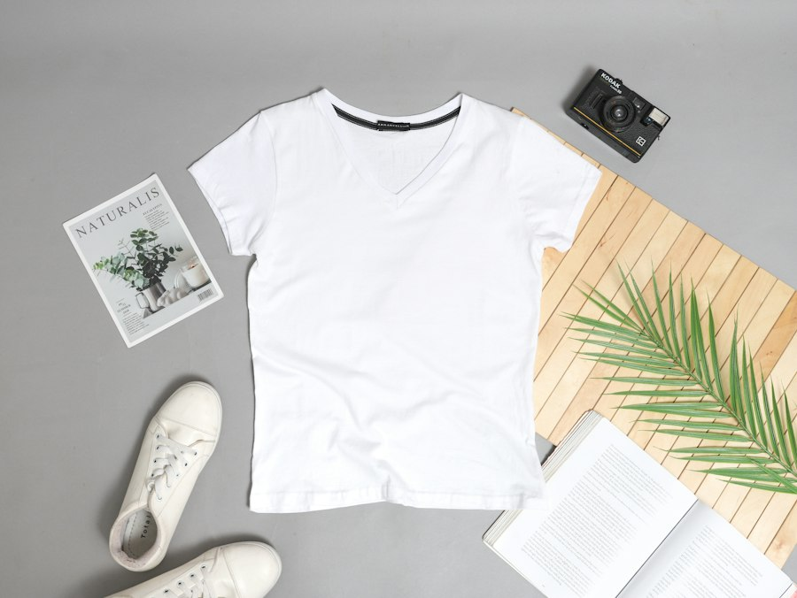

核心功能
先判断合不合身，再看穿上好不好看
输入身体数据和商品尺码表，计算适合的尺码、肩线、胸围松量和衣长关系。

核心功能
输入身体数据和商品尺码表，计算适合的尺码、肩线、胸围松量和衣长关系。

次要功能
以下是带真实照片的示例单品，不代表合作、广告或真实在售链接。
核心功能 · 选购决策
上传你看到的商品，或者先用内置真实照片和样例尺码数据体验。
STEP 1
STEP 2
胸围和肩宽可不填，但系统会降低结论置信度，不会假装精准。
商品数据
| 尺码 | 肩宽 | 胸围 | 衣长 |
|---|
合身分析
来自人体数据与尺码表的关系计算。
只用于颜色、风格和轮廓氛围参考。
AI 视觉试穿
本页是异步生成流程 Demo，不调用真实生图服务。
等待生成
照片不会上传；当前使用本地定时器模拟。
效果图是审美参考，不是精确版型结果，也不参与尺码推荐。
整套搭配
选择场景和主单品，生成衣服、裤子、鞋子的组合建议。
为什么这样搭
形象参考 · 扩展能力
不只放入口：这一版已经加入可选择的参考照片、参数和解释结果。
颈肩区域更清楚，适合比较领口、肩线和耳饰；正式功能会把用户本人照片与所选参考一起送入生图模型。
拖动参数后，系统会说明视觉变化。它表达穿搭和姿态关系，不预测减肥结果。
适合先验证版型与比例，不依赖复杂配饰。系统可据此调整商品推荐权重。
参考照片来自免费图库，仅用于演示。体态情景不预测减重结果，也不提供医疗或健身承诺。
我的档案
准确数据优先使用手工测量；照片估算只提供比例参考。